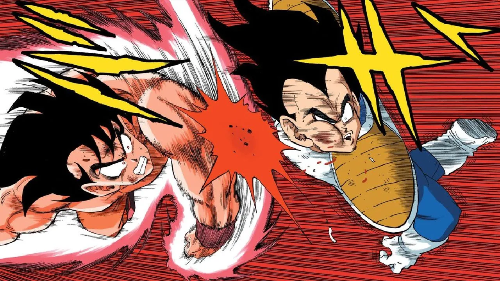

Saga sayayin
La historia comienza con la llegada de raditz a la tierra, secuestra al hijo de goku etc
Episodios notables:
- La llegada de Raditz
- Goku entrena con Kaio-Sama
- La batalla en la Tierra contra los Saiyan
Saga de freezer
Comienza con la llegada del villano al planeta Namek, en busca de las Dragon Balls.

Episodios notables:
- La llegada de Freezer
- La transformacion de Goku
- La batalla de Goku y Freezer
Saga de cell
Comienza con la llegada de Trunks del futuro al presente. Trunks es un Super Saiyan de un futuro alternativo

Episodios notables:
- La llegada de Trunks
- Entrenamiento en la maquina del tiempo
- La batalla de Gohan y Cell
Saga de majin boo
La saga de Majin Boo comienza con la llegada de Babidi, un mago malvado que busca liberar a Majin Boo

Episodios notables:
- La llegada de Majin bo
- La muerte de vegeta
- La batalla contra Majin Boo